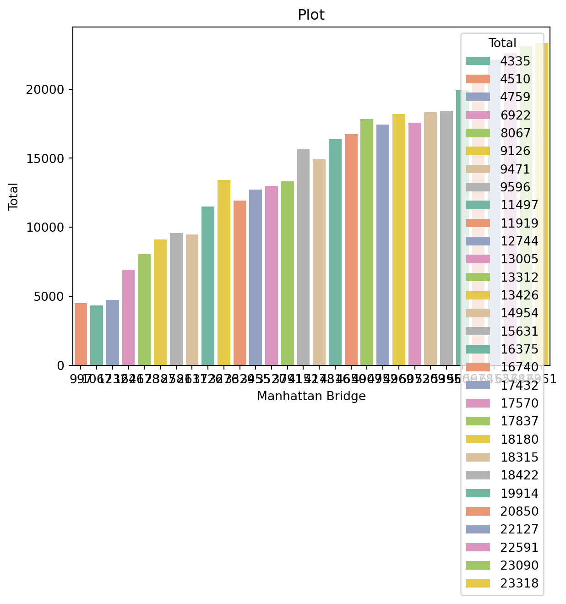

XGBoost Regression is a supervised machine learning algorithm that builds an ensemble of decision trees to predict continuous values. It is optimized for speed and performance using gradient boosting techniques.
Definition
XGBoost (Extreme Gradient Boosting) is an advanced implementation of gradient boosting designed for efficiency and accuracy. It improves predictions by sequentially training trees while correcting previous errors. The key components include:
Boosting Trees: A collection of decision trees built sequentially to reduce errors.
Gradient Descent Optimization: Adjusts model weights using the gradient of a loss function.
Regularization: Controls model complexity to prevent overfitting.
For regression, XGBoost predicts continuous values by minimizing a chosen loss function, commonly Mean Squared Error (MSE) or Mean Absolute Error (MAE).
Key Concepts
1. Boosting Mechanism:
- Unlike a single decision tree, XGBoost builds multiple trees in sequence.
- Each new tree corrects the errors of the previous ones by focusing on residuals.
Loss Functions:
Determines how errors are measured and minimized.
Common choices:
Mean Squared Error (MSE) – Penalizes larger errors more heavily.
Mean Absolute Error (MAE) – Treats all errors equally.
Huber Loss – A mix of MSE and MAE to handle outliers.
Regularization Techniques:
Prevents overfitting by adding penalties to complex models.
L2 Regularization (Ridge) – Penalizes large coefficients to reduce variance.
Feature Importance & Selection:
XGBoost ranks features by importance, aiding feature selection.
Can be used to eliminate redundant or irrelevant features.
Pros
1. High Performance – Optimized for speed, scalability, and efficiency.
2. Handles Missing Data – Automatically learns how to deal with missing values.
3. Regularization Built-in – Reduces overfitting with L1 and L2 penalties.
4. Works Well with Large Datasets – Efficient memory usage and parallel processing.
Cons
1. Complexity – More difficult to tune compared to simpler models.
2. Computationally Intensive – Training can be slow on very large datasets.
3. Sensitive to Hyperparameters – Performance depends on careful tuning of learning rate, tree depth, and regularization.
Tips
* Optimize Hyperparameters – Use grid search or Bayesian optimization for tuning.
* Use Early Stopping – Stops training if performance stops improving on validation data.
* Scale Features if Needed – Although XGBoost can handle unscaled data, standardization may help in some cases.
* Leverage Feature Importance – Identify and remove less relevant features to improve efficiency.
Requirement already satisfied: lets_plot in /opt/hostedtoolcache/Python/3.12.9/x64/lib/python3.12/site-packages (4.6.2)
Requirement already satisfied: pypng in /opt/hostedtoolcache/Python/3.12.9/x64/lib/python3.12/site-packages (from lets_plot) (0.20220715.0)
Requirement already satisfied: palettable in /opt/hostedtoolcache/Python/3.12.9/x64/lib/python3.12/site-packages (from lets_plot) (3.3.3)
# needed libraries for Regression modelsimport pandas as pdfrom sklearn import treeimport xgboost as xgbfrom sklearn.metrics import confusion_matrix, accuracy_score, f1_score, recall_score, precision_score, mean_squared_errorfrom sklearn.model_selection import cross_val_score, train_test_split , KFoldfrom sklearn.preprocessing import StandardScaler, Normalizerimport lets_plot as lpimport matplotlib.pyplot as pltimport numpy as npimport seaborn as sns# import kagglehub# foundation datasetdata_raw_url ="nyc-east-river-bicycle-counts.csv"bicycle_df = pd.read_csv(data_raw_url)
Explore, Visualize and Understand the Data
bicycle_df.head(10)
Unnamed: 0
Date
Day
High Temp (°F)
Low Temp (°F)
Precipitation
Brooklyn Bridge
Manhattan Bridge
Williamsburg Bridge
Queensboro Bridge
Total
0
0
2016-04-01 00:00:00
2016-04-01 00:00:00
78.1
66.0
0.01
1704.0
3126
4115.0
2552.0
11497
1
1
2016-04-02 00:00:00
2016-04-02 00:00:00
55.0
48.9
0.15
827.0
1646
2565.0
1884.0
6922
2
2
2016-04-03 00:00:00
2016-04-03 00:00:00
39.9
34.0
0.09
526.0
1232
1695.0
1306.0
4759
3
3
2016-04-04 00:00:00
2016-04-04 00:00:00
44.1
33.1
0.47 (S)
521.0
1067
1440.0
1307.0
4335
4
4
2016-04-05 00:00:00
2016-04-05 00:00:00
42.1
26.1
0
1416.0
2617
3081.0
2357.0
9471
5
5
2016-04-06 00:00:00
2016-04-06 00:00:00
45.0
30.0
0
1885.0
3329
3856.0
2849.0
11919
6
6
2016-04-07 00:00:00
2016-04-07 00:00:00
57.0
53.1
0.09
1276.0
2581
3282.0
2457.0
9596
7
7
2016-04-08 00:00:00
2016-04-08 00:00:00
46.9
44.1
0.01
1982.0
3455
4113.0
3194.0
12744
8
8
2016-04-09 00:00:00
2016-04-09 00:00:00
43.0
37.9
0.09
504.0
997
1507.0
1502.0
4510
9
9
2016-04-10 00:00:00
2016-04-10 00:00:00
48.9
30.9
0
1447.0
2387
3132.0
2160.0
9126
bicycle_df.describe()
Unnamed: 0
High Temp (°F)
Low Temp (°F)
Brooklyn Bridge
Manhattan Bridge
Williamsburg Bridge
Queensboro Bridge
Total
count
210.000000
210.000000
210.000000
210.000000
210.000000
210.000000
210.000000
210.000000
mean
104.500000
60.580000
46.413333
2269.633333
4049.533333
4862.466667
3352.866667
14534.500000
std
60.765944
11.183223
9.522796
981.237786
1704.731356
1814.039499
1099.254419
5569.173496
min
0.000000
39.900000
26.100000
504.000000
997.000000
1440.000000
1306.000000
4335.000000
25%
52.250000
55.000000
44.100000
1447.000000
2617.000000
3282.000000
2457.000000
9596.000000
50%
104.500000
62.100000
46.900000
2379.500000
4165.000000
5194.000000
3477.000000
15292.500000
75%
156.750000
68.000000
50.000000
3147.000000
5309.000000
6030.000000
4192.000000
18315.000000
max
209.000000
81.000000
66.000000
3871.000000
6951.000000
7834.000000
5032.000000
23318.000000
bicycle_df.dtypes
Unnamed: 0 int64
Date object
Day object
High Temp (°F) float64
Low Temp (°F) float64
Precipitation object
Brooklyn Bridge float64
Manhattan Bridge int64
Williamsburg Bridge float64
Queensboro Bridge float64
Total int64
dtype: object
sns.barplot(data=bicycle_df, x="Brooklyn Bridge", y ="Total", color="blue")plt.title("Plot")plt.legend(loc='upper right')plt.show()
/tmp/ipykernel_2377/3523077237.py:3: UserWarning:
No artists with labels found to put in legend. Note that artists whose label start with an underscore are ignored when legend() is called with no argument.
sns.barplot(data=bicycle_df, x="Manhattan Bridge", y ="Total", hue="Total", palette="Set2")plt.title("Plot")plt.show()

Feature Enginnering and Data Augmentation
Data Augmentation
Definition: Data augmentation is the process of artificially expanding the size and diversity of a training dataset by applying transformations or modifications to the existing data while preserving the underlying labels or structure. It is commonly used in machine learning, especially in computer vision and natural language processing, to improve model performance and robustness.
Feature Engineering
Definition: Feature engineering is the process of creating, modifying, or selecting relevant features (input variables) from raw data to improve the performance of a machine learning model. It involves transforming raw data into a format that makes it more suitable for algorithms to learn patterns.
params = {'objective': 'reg:squarederror', # Regression task'max_depth': 6, # Maximum depth of trees'learning_rate': 0.1, # Learning rate'n_estimators': 100, # Number of boosting rounds}
Train the model
model = xgb.train(params, dtrain, num_boost_round=100)
/opt/hostedtoolcache/Python/3.12.9/x64/lib/python3.12/site-packages/xgboost/training.py:183: UserWarning:
[02:52:01] WARNING: /workspace/src/learner.cc:738:
Parameters: { "n_estimators" } are not used.
Make predictions
# Predicting the Test set resultsy_pred = model.predict(dtest)
Hyperparameter Search
from sklearn.model_selection import GridSearchCV# Define the parameter grid to searchparam_grid = {'max_depth': [3, 4, 5, 6, 7],'learning_rate': [0.01, 0.1, 0.2],'n_estimators': [50, 100, 200],'subsample': [0.8, 0.9, 1.0],'colsample_bytree': [0.8, 0.9, 1.0]}# Create the XGBoost modelxgb_model = xgb.XGBRegressor(objective='reg:squarederror', seed=42)# Create and Configure GridSearchCVgrid_search = GridSearchCV( estimator=xgb_model, param_grid=param_grid, scoring='neg_mean_squared_error', # Since MSE should be minimized, we use its negative (because GridSearchCV maximizes the score) cv=5, # Uses 5-fold cross-validation to evaluate each parameter set verbose=1, # Prints progress updates n_jobs=-1# Uses all available CPU cores for parallel computation, making it faster)# Fit the Grid Search to Training Datagrid_search.fit(X_train, y_train)# Get the Best Model & Hyperparametersprint("Best hyperparameters:", grid_search.best_params_) # The optimal hyperparameter combinationprint("Best score:", grid_search.best_score_) # The highest cross-validation score (negative MSE)best_model = grid_search.best_estimator_ # The trained XGBoost model with the best hyperparametersprint(f"Grid Search: {best_model}")
Accuracy – The percentage of total predictions that are correct.
Example: If a spam filter correctly classifies 90 out of 100 emails (whether spam or not), the accuracy is 90%.
F1 Score – Out of all the positive predictions, how many were actually correct.
Example: If a spam filter predicts 20 emails as spam, but only 15 are actually spam, precision is 15/20 = 75%.
Recall Score – Out of all the actual positive cases, how many did the model correctly identify.
Example: If there were 25 spam emails in total, and the model correctly identified 15 of them, recall is 15/25 = 60%.
Precision Score – A balance between precision and recall (harmonic mean).
Example: If precision is 75% and recall is 60%, F1 score is (2 × 75 × 60) / (75 + 60) = 66.7%.
# Evaluate the model using regression metricsfrom sklearn.metrics import mean_squared_error, r2_score, mean_absolute_error# Calculate Mean Squared Error (MSE)mse = mean_squared_error(y_test, y_pred)# Calculate Root Mean Squared Error (RMSE)rmse = np.sqrt(mse)# Calculate Mean Absolute Error (MAE)mae = mean_absolute_error(y_test, y_pred)# Calculate R-squared (R2)r2 = r2_score(y_test, y_pred)# Print the evaluation metricsprint('Mean Squared Error (MSE):', mse)print('Root Mean Squared Error (RMSE):', rmse)print('Mean Absolute Error (MAE):', mae)print('R-squared (R2):', r2)
Mean Squared Error (MSE): 1.5638288259506226
Root Mean Squared Error (RMSE): 1.2505314174184599
Mean Absolute Error (MAE): 1.0395972728729248
R-squared (R2): 0.9999999403953552